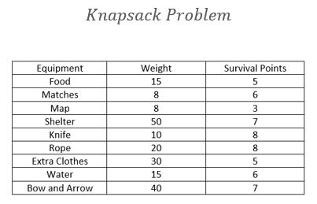
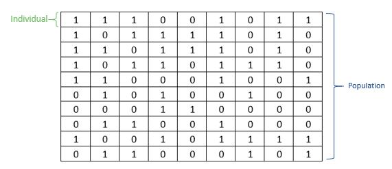
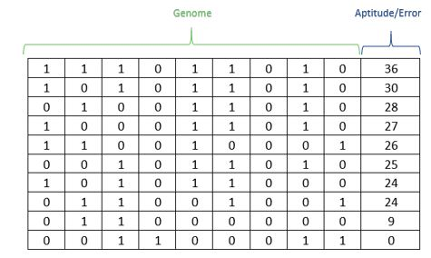
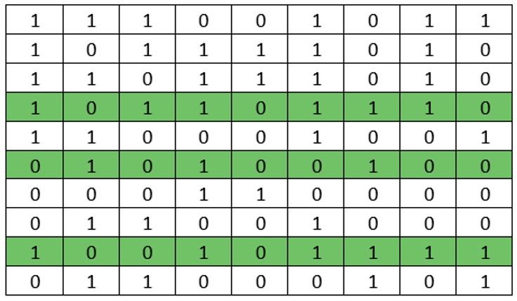
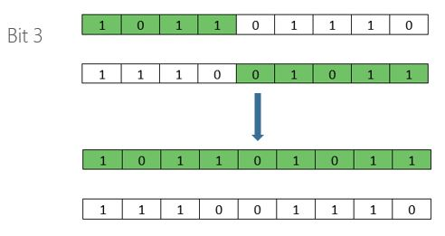
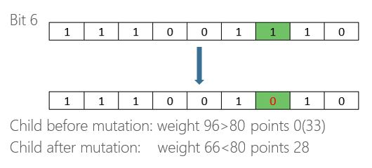

Defining Individual
Before creating our population, we have to define the individual, for that we need a metric for our aptitude. Lets say we wanted to find which items can be carried that will give us the most survival points, without exceeding the limit weight of 80. This means we have 9 items, and each item can be either taken(value of 1) or dropped(value of 0). In this example each individual would be made of 9 chromosomes, each chromosome made up of 1 allele, as we can only have 1 or 0 as values.
Creating first population

Having our genome defined, we now create a population, this consists of generating a predefined number of individuals with random values, the size of the population has to be big enough to be able to find the result, if its too small it will converge sooner and most probably, will not come close to the result, but you have to keep in mind that bigger populations will take more time to compute.
Fitness function/Error function

After creating our population, we have to decide which individual is the fittest, so we have to compare it with our objective, Since our objective is to have the highest survival points for our gear and there is no predefined target, Aptitude will be given by the sum of each item’s survival points, that the individual has on 1. So that a higher result means a fitter individual.
After getting everyone’s aptitude, we will now sort our population based in this, having our fittest individual on top.
Selection

There are different ways to make the selection, for this example, we will use tournaments. Tournaments consist in selecting a small percentage of random individuals from the population, selecting and choosing the fittest of them, this individual will now be the father, we repeat the process to get the mother.
Crossover/Reproduction

Once the set of parents is selected we do the reproduction or crossover, the simplest method is to select a random slicing point, this point will go from 1 to n-2, so that bit in position 0 and n-1(last bit) won’t be taken in consideration. After the slicing point is defined, we will slice both parents and make the crossover as shown. Suppose we had the slicing point at position 3 for the next individuals. We now take green cells for the first child and white cells for the second.
Mutation

Mutation will consist of changing a random bit from a random individual, where the probability for it to occur is going to be really small(less than 5%). Recommendation might vary but usually goes around 1.5%-2%. Having a small probability will help the exploration factor, without affecting the exploitation, which allows the population to eventually converge into an optimal solution, and since exploration is, in a way, the opposite from exploitation, having a big chance to mutate, will prevent population’s convergence. In the other hand, having a really small mutation factor is not good either, as the population will most probably converge into a local minimum.
Following the example before: We decided to mutate bit in position 6, if the bit had a value of 1, it will take a value of 0 and vice versa.
Convergence
We mentioned this concept before, but what does it mean? Convergence means that all our individuals, or at least most of them, are now the same. When convergence happens too soon, it usually means that the algorithm got stuck in a local minimum, different from the global, which is our actual result, To avoid this, different parameters can be tested, such as population size, mutation probability and tournament size can be increased or decreased to better fit our needs.
Applications
Natural Sciences, Mathematics and Computer Science
- Artificial creativity
- Network topologies
- Electronic circuit design, known as evolvable hardware
- Feature selection for machine learning
- Learning robot behavior using genetic algorithms
- Traveling salesman problem and its application
Earth Sciences
Design of water resource systems
Finance, Economics and Social Sciences
- Economics
- Design of anti-terrorism systems
- Linguistic analysis, including grammar induction and other aspects of Natural Language processing
Industry, Management and Engineering
- Automated design
- Mobile communications infrastructure optimization.
- Plant floor layout
- Quality control
- Vehicle routing problems
Biological Sciences and Bioinformatic
- RNA structure prediction
- Gene expression profiling analysis
Neural Networks
Other Applications
- Writing a book?
- Painting a new Rembrandt?
- Write music
- Detect cancer
- AI learns to play… on youtube